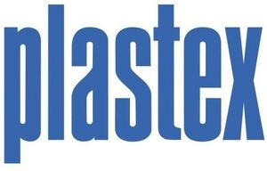

Trade Mark Journal No.2026/008 20 February 2026
WO0000001900821 (12,20,21,28)
Office of origin: European Union Intellectual Property Office (EUIPO)
Date of International Registration:25 September 2025
Date of designation in the UK:
25 September 2025

The mark contains the colour Blue.
International priority date claimed: 30 April 2025
(European Union Intellectual Property Office (EUIPO))
(019181275)
- Class 12
- Parts and fittings for vehicles; parts and fittings for water vehicles; fenders for water vehicles; parts and fittings for water vehicles, namely vessels for scooping water from a boat; pulks for transportation.
- Class 20
- Containers, and closures and holders therefor, non-metallic; portable water carriers [containers] made of plastics; plastic water tanks; plastic storage tanks; packaging containers of plastic; plastic tubs; furniture of plastic materials.
- Class 21
- Tableware, cookware and containers; containers for household or kitchen use; drinks containers; kitchen containers; kitchen utensils; food storage containers; containers for ice; dish covers; kitchen utensils; utensils for household purposes; refrigerating bottles; cold packs used to keep food and drink cold; glasses, drinking vessels and barware; all-purpose portable household containers; plastic bottles; watering cans.
- Class 28
- Toys, games, and playthings; sleds for use in downhill amusement rides; sledges for hill sledging; snow sliders; toy shovels; toy buckets and spades.
Oy Plastex Ab
Representative: Laine IP Oy, Porkkalankatu 24, FI-00180 Helsinki, FINLAND